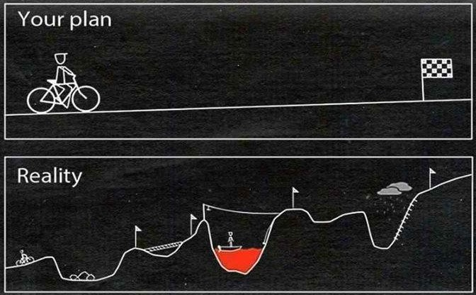

[03] Forbehandling av tekst 1

Martin Søyland <martin.soyland@stv.uio.no>
Disposisjon
- Litt om
regex - Hva er forbehandling av tekst, sånn egentlig?
Sekk med ord (Bag of words)
- Valg av analyseenhet
- Tokenisering (tokenizing)
- Reduksjon av kompleksitet
- Konstruere dokumenttrekkmatrise (DFM)
- Litt mer üò® avansert üò® preprosessering
- Oppsummering
- Basert på mønster i teksten brukes
Regular
expressions til å…
- …trekke ut
segmenter med tekst
str_extract()//str_extract_all()
- …fjerne
segmenter med tekst
str_remove()//str_remove_all()
- …erstatte
segmenter med tekst
str_replace()//str_replace_all()
- …logisk se
om segmenter med tekst eksisterer
str_detect()
- …trekke ut
segmenter med tekst
## Solveig er ca. 20 år og har bedre forelesninger enn Martin## [1] "2"## [[1]]
## [1] "2" "0"## [1] FALSE## [[1]]
## [1] "o" "e" "i" "e" "a" "å" "o" "a" "e" "e" "o" "e" "e" "i" "e" "e" "a" "i"## [1] "Martin er ca. 60 år og har bedre forelesninger enn Bjørn"Det kan fort bli veldig avansert
## [1] "martin.soyland@stv.uio.no" NAEt praktisk eksempel
Skraper personer fra ISV
#####################
## Regex eksempler ##
#####################
rm(list = ls())
library(rvest)
library(stringr)
library(ggplot2)
# Link til alle ISV-ansatte
isv_url <- str_c("https://www.sv.uio.no/isv/personer/?page=",
1:6,
"&u-page=",
1:6)
# Laster ned alle sidene
for(i in 1:length(isv_url)){
# Hvis siden allerede er lagret lokalt, hopper vi over den
if(file.exists(str_c("./data/isv_folk/", i, ".html"))) next
# Hvis siden ikke er lagret, laster vi ned og lagrer
download.file(isv_url[i],
destfile = str_c("./data/isv_folk/", i, ".html"))
# Sover litt
Sys.sleep(2)
}
# Leser inn alle filene og strukturer dem til datasett i en liste
isv_folk_filer <- list.files("./data/isv_folk", full.names = TRUE)
folk_df <- lapply(isv_folk_filer, function(x){
tmp_folk <- read_html(x)
tmp_folk <- tmp_folk %>%
html_elements("table") %>%
html_table() %>%
.[[1]] %>%
tibble()
return(tmp_folk)
})
# Binder sammen alle datasettene i lista
folk_df <- bind_rows(folk_df)
# Snur navnene for å showboate litt
# Originalt: [Etternavn, Fornavn]
# Ønsket resultat: [Fornavn Etternavn]
snudd_navn <- lapply(folk_df$Navn, function(x){
# Spitter ut navn og tittel, som er i samme kolonne
tmp <- x %>% str_split(., "\\n") %>% unlist()
# Det første elementet etter split er [Etternavn, Fornavn]
tmp_navn <- tmp[1]
# Splitter navnet på komma + mellomrom (", ")
tmp_navn <- tmp_navn %>% str_split(., ", ") %>% unlist()
# Limer sammen del 2 av navnet med del 1
# altså: str_c(fornavn, etternavn)
tmp_navn <- str_c(tmp_navn[2], tmp_navn[1], sep = " ")
# Bytter ut alle sekvenser med mellomrom med bare ett mellomrom
tmp_navn <- str_replace(tmp_navn, "\\s+", " ")
# Gir resultatet tilbake til "snudd_navn"
return(tmp_navn)
})
# Basically det samme som med navn, bare nå med tittel
tittel <- lapply(folk_df$Navn, function(x){
# Splitter navn på "\n"
tmp <- x %>% str_split(., "\\n") %>% unlist()
# hvis lengden på tmp er større enn 1 ...
if(length(tmp) > 1){
tmp_tittel <- tmp[2] #...skal tittelen være element 2 i tmp
} else {
tmp_tittel <- NA # ...hvis ikke, har ikke personen tittel (NA)
}
# Trimmer white space i tittel-strengen
tmp_tittel <- tmp_tittel %>%
str_trim()
# returnerer resultatet til "tittel
return(tmp_tittel)
})
# Setter inn snudd navn og tittel i tibble
folk_df$snudd_navn <- snudd_navn %>% unlist()
folk_df$tittel <- tittel %>% unlist()
# Fjerner de gamle variablene og endrer litt på rekkefølge
folk_df <- folk_df %>%
select(snudd_navn, tittel,
`E-post`, Telefon,
Emneord)
# Trekker ut bare de som har "Komparativ politikk" som emneord
folk_kp <- folk_df %>%
filter(str_detect(Emneord, "Komparativ politikk"))
# Skal telle hvor mange ganger emneord blir brukt
# Her splitter jeg emneordene på både komma og \n
telle_emner <- folk_df$Emneord %>%
str_split(., "\\,|\\n")
# Den resulterende listen går vi gjennom med lapply og ...
telle_emner <- lapply(telle_emner, function(x){
# ...trekker ut bare de elementene som inneholder tekst
# og trimmer strengene
tmp_emner <- x[which(str_detect(x,"[a-zæøå]+"))] %>%
str_trim()
# hvis tmp_emner er tom, returnerer vi med NA
if(identical(character(), tmp_emner)){
return(NA)
}
# Hvis den ikke er tom, returnerer vi emnene
return(tmp_emner)
})
telle_emner <- telle_emner %>%
unlist() %>%
table() %>%
.[which(. > 3)] %>%
as_tibble()
telle_emner$emneord <- telle_emner$.
telle_emner %>% arrange(n)
ggplot(telle_emner, aes(x = emneord, y = n)) +
geom_bar(stat = "identity") +
theme(axis.text.x = element_text(angle = 90,
vjust = .5,
hjust = 1))Hva er forbehandling av tekst, sånn egentlig?
- Det vi gjør med data før vi skal analysere
(preprosessering)
- gjelder egentlig alle type data, ikke bare tekst
- Valg av
datastruktur
- hva skal være dokumentene (enhetene) våre?
- Dele opp teksten via tokenisering
- Grep for å
redusere
kompleksitet
- språk er ekstremt komplekst for en datamaskin å forstå
- Hvordan vi går fra
tekst til tall
- ikke alltid frekvens
Noen sentrale begreper
Preprosessering: det samme som forbehandling av tekst
Type: unikt segment bokstaver, som sammen gir mening
- Ord og segmenter som “i dag”, “Sogn i Fjordane”, osv
Token: et spesifikt tilfelle av en type
- “veldig, veldig bra” har 3 typer men 2 tokens
Term: det vi analyseteknikker ser på som en type vi måler
- stem: “hels” av “helse” eksisterer ikke
Corpus: en samling dokumenter
- Latin for noe sånt som “innsamlet materiale”
Sekk med ord
BoW antagelse
- Vi antar at en tekst gir samme mening etter å ha …
- … klippet ut ordene fra teksten
- … lagt ordene i en pose
- … ristet posen
- … kastet ordene ut igjen
BoW antagelse
Hva handler sangen om?
## mener før en en sluke ha meg maddrass fine helst
## igjen meg den som ha hvis fine fyr ikke synger
## fy hvis skyer tre en var jeg stor der bokhylle
## seng dritdigg er skjønte på han vil selv roman også
## at god naturen barn med bokhylle få ganske før igjen
## vil plass liten selv igjen og men var gjennom fra
## og vil finn ringte hva ikke du kan vanlig tro
## vil var jeg før kan liker vil venn en alt
## stor med der sola ha stor si meg kan sola
## en ha jeg jeg rekker selv stor vil en med
## som jeg helt den ikke faen kan være ha stor
## meg du bryte ikke men meg dør si som roman
## en igjen denne du skille gjennom dø ringte jeg vil
## en vil skyer som litt vil og å sangen ha
## ikke borte i jeg kan som vil min finn vil
## for før ha vil men hva av ha meg stor
## jeg jeg helst jeg jeg sol at av bare vil
## står vil tro ha seg seng å maddrass seg på
## fra sånn på tre vil en han her og få
## være jeg står på sånn kan bryte evig for men
## bare fyr plass vil hva med men plass og som
## helst er stor dritdigg ut selv jeg som plass vilRekkefølge er viktig!
## [1] "Jeg mener alt i denne sangen"
## [2] ""
## [3] "Vil ha en stor bokhylle"
## [4] "Med stor, stor plass"
## [5] "Vil han en seng som ikke er fra finn med dritdigg maddrass"
## [6] "Vil ha en fyr som bare vil ha meg, men helst en roman"
## [7] ""
## [8] "Fy f*en, hva synger jeg her?"
## [9] ""
## [10] "Jeg vil ha tre fine skyer"
## [11] "Som står for seg selv"
## [12] "Sånn at sola kan få plass"
## [13] "Og bryte gjennom hvis den vil"
## [14] ""
## [15] "Jeg skjønte ikke du var borte"
## [16] "Før du ringte på og var der igjen"
## [17] "Før du ringte på og var der igjen, igjen, igjen, min venn"
## [18] ""
## [19] "Men hva kan jeg si?"
## [20] "Jeg liker å tro"
## [21] "Tro på naturen"
## [22] "På en evig sol"
## [23] "Som kan ikke kan sluke meg helt før jeg rekker å dø av meg selv"
## [24] ""
## [25] "Hva kan jeg si?"
## [26] "Jeg vil ikke være stor, jeg vil være liten"
## [27] "Men også litt god"
## [28] "Og helst ganske vanlig, men skille meg ut"
## [29] "Før jeg dør av meg selv"
## [30] ""
## [31] "Vil ha en stor bokhylle"
## [32] "Med stor, stor plass"
## [33] "Vil han en seng som ikke er fra finn med dritdigg maddrass"
## [34] "Vil ha en fyr som bare vil ha meg, men helst en roman"
## [35] "Jeg vil ha barn"
## [36] ""
## [37] "Jeg vil ha tre fine skyer"
## [38] "Som står for seg selv"
## [39] "Sånn at sola kan få plass"
## [40] "Og bryte gjennom hvis den vil, vil, vil"
## [41] ""Valg av analyseenhet

- Hva er enheten i analysen din?
Spørsmål i Stortinget – hva er enheten?
## question_from_id qustion_to_id title
## 1 MMK ODDØ auke i vinnings-, valds- og tra
## 2 RSK KRCL hvordan statsråden vil forhindr
## 3 HBL JP hva Regjeringen har gjort for å
## 4 RUI ODDØ behov for _innstramminger i våp
## 5 JIA DH samhandling mellom helsetjenest
## 6 MMK ISC _konkurranseutsetjing og privat
## 7 ASK DH å sikre at alle følger regelver
## 8 AAMH JP grep for å _sikre norsk landbru
## 9 ESF AG tiltak for å sikre _næringsutvi
## 10 SKB EIS tiltak for å bedre _situasjonenValg av analyseenhet
Eksempel: Alle tekstene til Klossmajor – Ordner seg for snille jenter
klossmajor_filer <- list.files("./data/klossmajor",
full.names = TRUE)
klossmajor <- lapply(klossmajor_filer, function(x){
tmp <- readLines(x) %>%
tibble(tekst = .)
tmp$tittel <- x %>%
str_remove_all("./data/klossmajor/|.txt")
tmp$linje <- 1:nrow(tmp)
tmp <- tmp %>% dplyr::select(tittel, linje, tekst)
return(tmp)
})
klossmajor <- klossmajor %>% bind_rows()Linjer / Setninger
## # A tibble: 3 × 3
## tittel linje tekst
## <chr> <int> <chr>
## 1 Blør 1 [Vers 1]
## 2 Blør 2 Du, du skal få alt du vil
## 3 Blør 3 Alt som jeg har og litt til- Finnes det en bedre måte å dele inn data i her?
- Ja, i spor/sanger
Tokenisering (tokenizing)
- Vanligvis deler vi analyseenhetene opp i ord …
- … men det finnes andre måter:
library(tokenizers)
eks_streng <- "Her er en streng vi \n kan bruke som eksempelet vårt"
tokenize_characters(eks_streng, simplify = TRUE)## [1] "h" "e" "r" "e" "r" "e" "n" "s" "t" "r" "e" "n" "g" "v" "i" "k" "a" "n" "b"
## [20] "r" "u" "k" "e" "s" "o" "m" "e" "k" "s" "e" "m" "p" "e" "l" "e" "t" "v" "å"
## [39] "r" "t"## [1] "her" "er" "en" "streng" "vi"
## [6] "kan" "bruke" "som" "eksempelet" "vårt"Reduksjon av kompleksitet
- üòï Spr√•k er komplekst!
- üßù‚Äç‚ôÄÔ∏è Men vi kan gjøre magi med forenkling
- üëé Kompleks representasjon gir oss lite
- ü§î Hvor mye og hvilken reduksjon, avhenger av spørsm√•let man stiller!
Store bokstaver?
- Lowercase av alle ord -> gjøre alle
bokstaver små
- Ord i starten av setningen betyr det samme som de midt i setningen
- Er det alltid riktig?
Tall // Punktsetting?
- Det er veldig vanlig å fjerne tall og punktsetting
fra corpus
- Gir sjelden informasjon som er relevant
- Er det alltid riktig?
Stoppord?
- Ord som for seg selv (sekk med ord) ikke gir substansiell mening
- Er det alltid riktig?
Stemming eller lemmatisering?
Stemming kutter av halen og bevarer stammen av ord
## Før stemming:## mange fine fugler fløy på himmelen men én fugl var langt bak## Etter stemming:## mang fin fugl fløy på himmel men én fugl var langt bakFunker dårlig på sterke bøyninger:
## Før stemming:## [1] "fot, foten, føtter"## Etter stemming:## [1] "fot" "fot" "føtt"Lemmatisering er å bøye ordet til sin gramatiske rotform
## Warning in spacy_parse.character("fot, foten, føtter", pos = FALSE):
## lemmatization may not work properly in model 'nb_core_news_lg'## doc_id sentence_id token_id token lemma entity
## 1 text1 1 1 fot fot
## 2 text1 1 2 , ,
## 3 text1 1 3 foten fot
## 4 text1 1 4 , ,
## 5 text1 1 5 føtter fot| Metoder | Koder |
|---|---|
| Stemming | quanteda::dfm_wordstem() |
tokenizers::tokenize_word_stems() |
|
SnowballC::wordStem() |
|
| Lemmatisering | spacyr::spacy_parse()
(OBS!) |
| Oslo-Bergen tagger |
Dokumenttrekkmatrise (DFM)
- Når vi har bestemt oss for enhets- og
reduksjonsstrategi vil vi…
- …gå over til tallanlyse
- Her tokeniserer vil til ord og teller på spor/sanger:
- Så gjør vi om til DFM med…
- …trekk (ord) som kolonner
- …dokument (sanger) som rader
## Document-feature matrix of: 9 documents, 427 features (79.42% sparse) and 0 docvars.
## features
## docs 1 2 å alt bare blinder blør bo deg der
## Blør 1 1 3 4 6 1 6 2 4 1
## Flaske med vin 1 1 0 0 0 0 0 0 9 0
## Heier bare på meg 1 1 2 12 1 0 0 0 0 0
## Jævlig 1 1 3 0 0 0 0 0 1 0
## Jenter 0 0 0 0 2 0 0 0 0 0
## Likerklikk 1 1 0 2 0 0 0 0 3 0
## [ reached max_ndoc ... 3 more documents, reached max_nfeat ... 417 more features ]Trekkreduksjon i DFM
km_dfm <- klossmajor %>%
group_by(tittel) %>%
unnest_tokens(.,
output = token,
input = tekst,
token = "words",
to_lower = TRUE,
stopwords = quanteda::stopwords("no"),
strip_punct = TRUE,
strip_numeric = TRUE) %>%
mutate(token = quanteda::char_wordstem(token, language = "norwegian")) %>%
count(token) %>%
cast_dfm(., document = tittel, term = token, value = n)## Document-feature matrix of: 9 documents, 325 features (84.55% sparse) and 0 docvars.
## features
## docs alt blind blør bo få fall finn fred gjør grei
## Blør 4 1 6 2 3 1 2 1 1 2
## Flaske med vin 0 0 0 0 0 2 0 0 0 0
## Heier bare på meg 12 0 0 0 0 1 0 0 3 4
## Jævlig 0 0 0 0 0 0 0 0 5 1
## Jenter 0 0 0 0 0 1 0 0 0 0
## Likerklikk 2 0 0 0 0 0 0 0 0 0
## [ reached max_ndoc ... 3 more documents, reached max_nfeat ... 315 more features ]Hvilke spor er likest?
[07] Ordbøker, tekstlikhet og sentiment
Litt mer avansert preprosessering
- Noen ganger ønsker vi å bevare kompleksitet i form
av …
- …rekkefølge på ord (ngrams)
- …ordeksklusivitet (tf-idf)
- …ords grammatiske funksjon (PoS)
- …enhetsgjenkjenning (NER)
Ngrams
Unigram:
## [1] "men" "med" "litt" "vin" "kan" "det" "bli" "bedre" "i"
## [10] "kveld"Bigram:
## [1] "men med" "med litt" "litt vin" "vin kan" "kan det" "det bli"
## [7] "bli bedre" "bedre i" "i kveld"Trigram:
## [1] "men med litt" "med litt vin" "litt vin kan" "vin kan det"
## [5] "kan det bli" "det bli bedre" "bli bedre i" "bedre i kveld"TF-IDF
\[tf=\frac{antall\ ganger\ token\ er\ i\ dokumentet}{antall\ tokens\ i \ dokumentet}\]
\[idf=log(\frac{totalt\ antall\ dokument}{antall\ dokumenter\ som\ inneholder\ token})\]
\[tf-idf=tf*idf\]
Toppord basert på frekvens:
## # A tibble: 4 × 6
## # Groups: tittel [4]
## tittel token n tf idf tf_idf
## <chr> <chr> <int> <dbl> <dbl> <dbl>
## 1 Heier bare på meg alt 12 0.0411 0.811 0.0333
## 2 Jævlig helt 5 0.0204 0.588 0.0120
## 3 Likerklikk sier 7 0.0235 1.50 0.0353
## 4 Snakkes i baren litt 7 0.0391 0.251 0.00983Toppord basert på TF-IDF:
## # A tibble: 4 × 6
## # Groups: tittel [4]
## tittel token n tf idf tf_idf
## <chr> <chr> <int> <dbl> <dbl> <dbl>
## 1 Heier bare på meg takk 12 0.0411 2.20 0.0903
## 2 Jævlig andrevalget 3 0.0122 2.20 0.0269
## 3 Likerklikk likerklikk 6 0.0201 2.20 0.0442
## 4 Snakkes i baren aktuell 3 0.0168 2.20 0.0368Effekt på likhetsanalyse:
Taledeler (parts-of-speech)
Grammatiske
funksjonen til et ord (spacyr)
## doc_id sentence_id token_id token pos
## 186 text1 14 1 Det PRON
## 187 text1 14 2 er AUX
## 188 text1 14 3 bare ADV
## 189 text1 14 4 det PRON
## 190 text1 14 5 jeg PRON
## 191 text1 14 6 tenker VERBNavngitte enheter (named entity)
Stort sett personer, steder, organisajoner, etc:
## doc_id sentence_id token_id token pos entity
## 1 text1 1 1 NSB PROPN ORG_B
## 2 text1 1 3 Jernbaneverket PROPN ORG_B
## 3 text1 1 6 Hallenskog PROPN LOC_B
## 4 text1 1 7 stasjon NOUN LOC_I
## 5 text1 1 9 Spikkestadbanen PROPN LOC_B
## 6 text1 2 5 Oslo PROPN LOC_B
## 7 text1 4 1 Hallenskog PROPN LOC_BOppsummering
- Preprosessering …
- ‚Ķü뮂Äçüåæ foreg√•r mellom anskaffelse og analyse av tekst
- …✅ påvirker analyse (Denny and Spirling 2018)
- ‚Ķüíπ reduserer kompleksitet i data
- ‚ĶüôÖ‚Äç‚ôÄÔ∏è bestemmer forutsettninger (sekk med ord)
- ‚Ķü§î har ikke en standard oppskrift ‚Äì bruk huet!
Scrapescript for Klossmajor
# Laster inn bibliotek
library(rvest)
library(stringr)
# Url for albumforside
base_url <- "https://genius.com/albums/Klossmajor/Ordner-seg-for-snille-jenter"
# Trekker ut liste av sanger
track_list <- read_html(base_url)
# Trekker ut linkene til hver sang
track_list_links <- track_list %>%
html_elements("div.chart_row-content > a") %>%
html_attr("href")
# For hver sanglink...
for(i in track_list_links){
# Les inn siden
tmp <- read_html(i)
lyrics <- tmp %>%
html_elements(xpath = '//*[@id="lyrics-root"]/div[1]') %>% # ...trekk ut denne "xpath"
html_text2() %>% # ...gjør om til tekst (med \\n tags)
str_split("\\n") %>% # ...split opp teksten i linjer
unlist() # ...gjør om fra liste til vektor
# Trekk ut tittel på sangen
title <- tmp %>%
html_elements("h1 > span") %>%
html_text()
# Skriv sangen til fil
writeLines(lyrics, paste0("./data/klossmajor/", title, ".txt"))
# Sov litt
Sys.sleep(2)
}